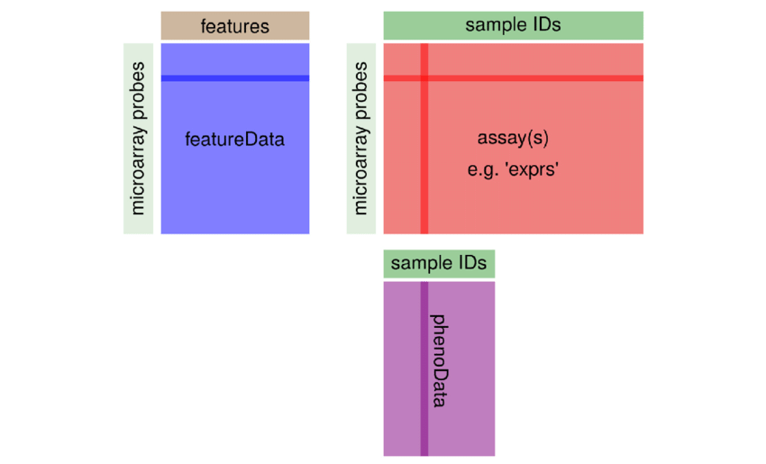
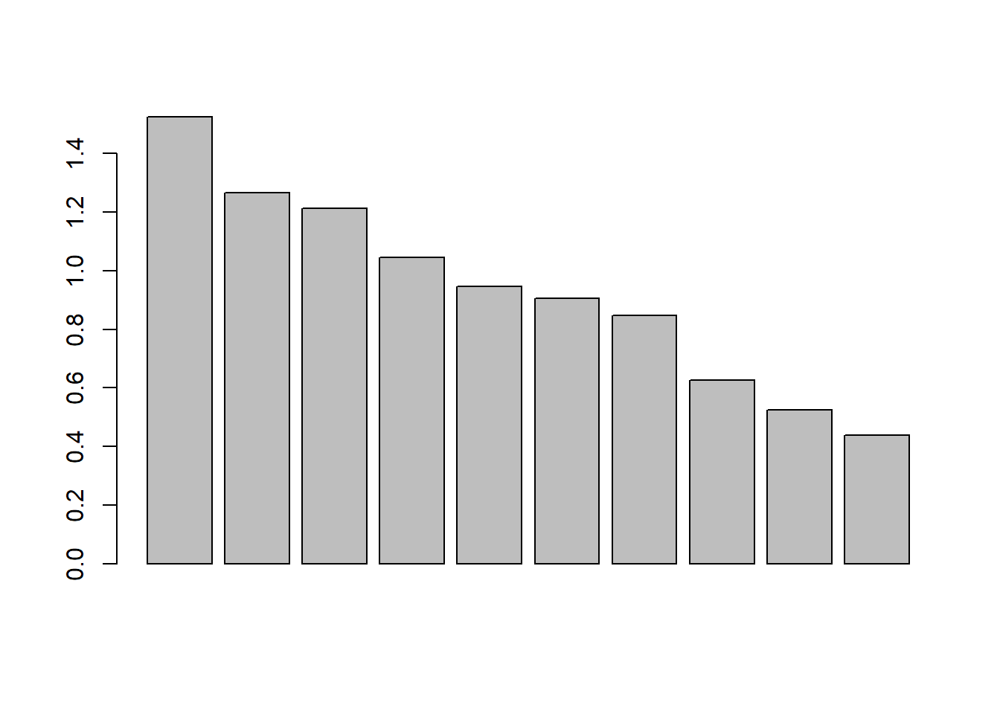
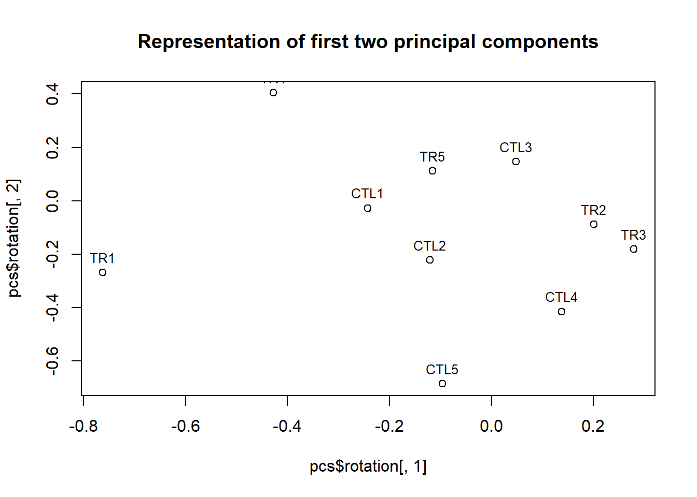

Bioconductor classes for working with microarrays or similar data
Author
Alex Sanchez-Pla
Published
March 28, 2024
1 Introduction
Many omics data, once they have been pre-processed, can be stored as numeric data that can be represented as the typical “data matrix”. This matrix is, however, usually transposed, that is genes (variables) are in rows and samples (individuals) are in columns.
A person who is familiar with statistics and R can therefore explore an omics dataset using standard univariate and multivariate statistical methods.
In practice, omics datasets have more information than just what can be stored in a table. This can be annotation data, multiple covariates other than what is in the column names, or information about th eexperimental design or simply the experiment.
Even for a person who is proficient with software, managing simultaneously distinct objects, that contain related information, can be “tricky” and there is always a danger that the distinct components lose synchronization. For instance removing one sample from the expression matrix requires that the corresponding information is removed or updated in the covariates table. And an error at doing this can yield different problems.
In this lab we introduce the ExpressionSet class as an option for managing all these pieces of information simultaneously, which not only simplifies the process, but also prevents mistakes derived from lack of consistency between the parts.
The lab has two parts
Introduces bioconductor classes to store and access microarray data.
Shows how to use the GEOquery bioconductor package to download microarray data into an analysis-ready form.
1.1 Availability
This document can be re-created using the repository
2 Bioconductor classes to manage micrarray and similar data
2.1 The OOP paradigm
Object-oriented design provides a convenient way to represent data structures and actions performed on them.
A class can be tought of as a template, a description of what constitutes each instance of the class.
An instance of a class is a realization of what describes the class.
Attributes of a class are data components, and methods of a class are functions, or actions the instance/class is capable of.
The R language has several implementations of the OO paradigm but, in spite of its success in other languages, it is relatively minoritary.
2.2 Bioconductor Classes
One case where OOP has succeeded in R or, at least, is more used than in others is in the Bioconductor Project (bioconductor.org). In Bioconductor we have to deal with complex data structures such as the results of a microarray experiment, a genome and its annotation or a complex multi-omics dataset. These are situations where using OOP to create classes to manage those complex types of data is clearly appropriate.
2.3 The Biobase package
The Rpackage{Biobase} package implements one of the best known Bioconductor classes: ExpressionSet. It was originally intended to contain microarray data and information on the study that generated them and it has become a standard for similar data structures.
library(Biobase)
Loading required package: BiocGenerics
Attaching package: 'BiocGenerics'
The following objects are masked from 'package:stats':
IQR, mad, sd, var, xtabs
Welcome to Bioconductor
Vignettes contain introductory material; view with
'browseVignettes()'. To cite Bioconductor, see
'citation("Biobase")', and for packages 'citation("pkgname")'.
Figure @ref(ExpressionSet) shows the structure of this class. It is essentially a container that has distinct slots to store some of the most usual components in an omics dataset.

Structure of the ExpressionSet class, showing its slots and their meaning. Reproduced from Klaus, B., & Reisenauer, S. (2018)
The advantage of the OOP approach is that, if a new type of omics data needs a similar but different structure it can be created using inheritance, which means much less work than and better consistency than creating it from scratch.
2.4 A toy dataset
For the purpose of this lab we are going to simulate a toy (fake) dataset that consists of the following:
Expression values A matrix of 30 rows and 10 columns containing expression values from a gene expression experiment. Matrix column names are sample identifiers
Covariates A table of ten rows and four columns containing the sample identifiers, the treatment groups and the age and sex of individuals.
Genes Information about the features contained in the data. May be the gene names, the probeset identifiers etc. Usually stored in a character vector but may also be a table with distinct annotations per feature.
Information about the experiment Additional information about the study, such as the authors and their contact details or the title and url of the study that originated them.
group age sex
sample1 CTL1 29 Female
sample2 CTL2 30 Male
sample3 CTL3 30 Male
sample4 CTL4 23 Female
sample5 CTL5 30 Male
sample6 TR1 38 Male
sample7 TR2 22 Male
sample8 TR3 28 Female
sample9 TR4 32 Male
sample10 TR5 30 Female
myGenes <-paste0("gene",1:30)
myInfo=list(myName="Alex Sanchez", myLab="Bioinformatics Lab",myContact="alex@somemail.com", myTitle="Practical Exercise on ExpressionSets")show(myInfo)
Having data stored in this way is usually enough for most of the analyes we may want to do. The only unconvenient comes from the fact that the information about the same individuals is in separate R objects so that, for certain applications, we will have to access several objects and assume they are well related.
For example if we want to make a principal components analysis and plot the groups by treatment we need to use both expressionValues" andtargets.”
pcs <-prcomp(expressionValues)names(pcs)
[1] "sdev" "rotation" "center" "scale" "x"
barplot(pcs$sdev)

plot(pcs$rotation[,1], pcs$rotation[,2], main="Representation of first two principal components")text(pcs$rotation[,1], pcs$rotation[,2], targets$group, cex=0.8, pos=3)

Or, if we sort the genes from most to least variable and whant to see which are the top variable genes. We need to use both objects expressionValues" andmyGenes” assuming they are well linked:
It is relatively easy to make an unnoticeable mistake in removing unrelated values from the data matrix and the targets table. If instead of removing individual 9 we remove individual 10 it may be difficult to realize what has happened unless it causes a clear unconsistency!
2.5 Creating and using objects of class ExpressionSet
In order to use a class we need to instantiate it, that is we need to create an object of this class.
This can be done using the generic constructor new or with the function ExpressionSet.
Both the constructor or the function require a series of parameters which roughly correspond to the slots of the class (type ? ExpressionSet to see a list of compulsory and optional arguments).
In the following subsections we describe how to create an ExpressionSet using the components of the toy dataset. Some of the elements will directly be the element in the toy dataset, such as the expression matrix. For others such as the covariates or the experiment information, specific classes have been introduced so that we have to instantiate these classes first and then use the the objects created to create the ExpressionSet object.
2.5.1 Slot AssayData
The main element, and indeed the only one to be provided to create an ExpressionSet, is AssayData. For our practical purposes it can be seen as a matrix with as many rows as genes or generically “features” and as many columns as samples or individuals.
Covariates, such as those contained in the “targets” data frame are not included in the “ExpressionSet” “as.is”. Instead we have first to create an intermediate object of class AnnotatedDataFrame.
Class Rclass{AnnotatedDataFrame} is intended to contain a data frame where we may want to provide enhanced information for columns, i.e. besides the short column names, longer labels to describe them better.
The information about covariates, contained in an instance of class AnnotatedDataFrame, is stored in the slot phenoData.
columnDesc <-data.frame(labelDescription=c("Treatment/Control", "Age at disease onset", "Sex of patient (Male/Female"))myAnnotDF <-new("AnnotatedDataFrame", data=targets, varMetadata= columnDesc)show(myAnnotDF)
An object of class 'AnnotatedDataFrame'
rowNames: sample1 sample2 ... sample10 (10 total)
varLabels: group age sex
varMetadata: labelDescription
Notice that we have not included a label for sample names because this information is not a column of the phenoData object.
Once we have an AnnotatedDataFrame we can add it to the ExpressionSet
phenoData(myEset) <- myAnnotDF
Alternatively we could have created theAnnotatedDataFrame object first and then create the ExpressionSet object with both the expression values and the covariates. In this case it would be required that the expression matrix colum names are the same as the targets row names.
ExpressionSet (storageMode: lockedEnvironment)
assayData: 30 features, 10 samples
element names: exprs
protocolData: none
phenoData
sampleNames: sample1 sample2 ... sample10 (10 total)
varLabels: group age sex
varMetadata: labelDescription
featureData: none
experimentData: use 'experimentData(object)'
Annotation:
2.5.3 Adding information about features
Similarly to what we do to store information about covariates, information about genes (or generically “features”) may be stored in the optional slot featureData as an AnnotatedDataFrame.
The number of rows in featureData must match the number of rows in assayData. Row names of featureData must match row names of the matrix / matrices in assayData.
This slot is good if one has an annotations table that one wishes to store and manage jointly with the other values. ALternatively we can simple store the names of the features using a character vector in the slot featureNames.
In a similar way to what happens with the AnnotatedDataFrame class there has been developed a class to store information about the experiment. The structure of the class, called MIAME follows the structur of what has been described as the “Minimum Information About a Microarray Experiment” see www.ncbi.nlm.nih.gov/pubmed/11726920
This is useful information but it is clearly optional for data analysis.
The advantage of working with ExpressionSets lies in the fact that action on the objects are done in such a way that its consistency is ensured. That means for instance that if we subset the ExpressionSet it is automatically done on the columns of the expressions and on the rows of the covariates and it is no possible that a distinct row/column are removed.
The following lines illustrate some management of data in an ExpressionSet.
2.6.1 Accessing Slot values
Notice that to access the values we use special functions called “accessors” instead of the dollar symbol (which would not work for classes) or the @ symbol that does substitute the $ symbol.
Notice also that, in order to access the data frame contained in the phenoData slot, which is an AnnotatedDataFrame, we need to use two accessors: phenoData to access the ExpressionSet’sphenoData slot and pData to access the data slot in it. It is strange until you get used to it!
group age sex
sample1 CTL1 29 Female
sample2 CTL2 30 Male
sample3 CTL3 30 Male
sample4 CTL4 23 Female
sample5 CTL5 30 Male
sample6 TR1 38 Male
head(pData(myEset))
group age sex
sample1 CTL1 29 Female
sample2 CTL2 30 Male
sample3 CTL3 30 Male
sample4 CTL4 23 Female
sample5 CTL5 30 Male
sample6 TR1 38 Male
2.6.2 Subsetting ExpressionSets
This is where the interest of using ExpressionSets is most clearly realized.
The ExpressionSet object has been cleverly-designed to make data manipulation consistent with other basic R object types. For example, creating a subset of an ExpressionsSet will subset the expression matrix, sample information and feature annotation (if available) simultaneously in an appropriate manner. The user does not need to know how the object is represented “under-the-hood”. In effect, we can treat the ExpressionSet as if it is a standard R data frame
We can for instance create a new dataset for all individuals younger than 30 or for all females without having to worry about doing it in every component.
group age sex
sample1 CTL1 29 Female
sample4 CTL4 23 Female
sample7 TR2 22 Male
sample8 TR3 28 Female
2.7 Exercises
Create an ExpressionSet object to contain the data for the example study using the data you have downloaded and used in the first section. That is, adapt the steps taken to creat the ExpressionSet with the toy dataset to create one with the data from the study.
Do some subsetting and check the consistency of the results obtained. For example remove some sample from the covariates slot (the phenoData) and see if it is automatically removed from the expression matrix`.
Check that you are able to reproduce the analysis in the first part accessing the components of the object created.
3 The GEOquery package to download data from GEO
The NCBI Gene Expression Omnibus (GEO) serves as a public repository for a wide range of high-throughput experimental data. These data include single and dual channel microarray-based experiments measuring mRNA, genomic DNA, and protein abundance, as well as non-array techniques such as serial analysis of gene expression (SAGE), mass spectrometry proteomic data, and high-throughput sequencing data.
At the most basic level of organization of GEO, there are four basic entity types. The first three (Sample, Platform, and Series) are supplied by users; the fourth, the dataset, is compiled and curated by GEO staff from the user-submitted data. More information is available in the GEO site and in the document Analisis_de_datos_omicos-Ejemplo_0-Microarrays available in github.
Data can be downloaded from GEO in a wide variety of formats and using a variety of mechanisms. See the download page in this link.
Here we only describe how to download a datset using either its series (“GSExxx”) or its Dataset (“GDSxxx”) identifier.
In the following lines we illustrate how to get the data for this example using the dataset used in the case study Analisis_de_datos_omicos-Ejemplo_0-Microarrays, avilable from github.
As can be seen there the the dataset has the following identifiers:
Series accesion ID for : GSE27174
Dataset accesion ID for : GDS4155
Plattform accession ID : GPL6246
3.1 Downloading a dataset in GSE format
Getting a series dataset from GEO is straightforward. There is only one command that is needed: getGEO.
This function interprets its input (depending on the data format) to determine how to get the data from GEO and then parse the data into useful R data structures.
if (!require(GEOquery)) { BiocManager::install("GEOquery")}
If the data format required is a “Series” (GSExxxx) the function returns a list, each of which elements is an expressionSet (this is so because sometimes a Series may have several collections of samples).
class(gse)
[1] "list"
names(gse)
[1] "GSE27174_series_matrix.txt.gz"
length(gse)
[1] 1
gse[[1]]
ExpressionSet (storageMode: lockedEnvironment)
assayData: 35557 features, 8 samples
element names: exprs
protocolData: none
phenoData
sampleNames: GSM671653 GSM671654 ... GSM671660 (8 total)
varLabels: title geo_accession ... strain:ch1 (40 total)
varMetadata: labelDescription
featureData
featureNames: 10338001 10338002 ... 10608724 (35557 total)
fvarLabels: ID Gene title ... GO:Component ID (21 total)
fvarMetadata: Column Description labelDescription
experimentData: use 'experimentData(object)'
pubMedIds: 21725324
Annotation: GPL6246
esetFromGEO <- gse[[1]]
By creating the expressionSet automatically the slow process of creating the object step by step, as in the previous section, can be avoided.
We can look at the covariates information, but the phenoData object created automatically contains lot of repeated information. Eventually we can explore it and decide which columns we keep and whichs may be removed. For instance we keep the last two columns and see that column 39 contains the information that defines the groups.
infection status:ch1
GSM671653 infected with lentiviruses expressing the three dopaminergic transcription factors Ascl1, Lmx1a and Nurr1
GSM671654 infected with lentiviruses expressing the three dopaminergic transcription factors Ascl1, Lmx1a and Nurr1
GSM671655 infected with lentiviruses expressing the three dopaminergic transcription factors Ascl1, Lmx1a and Nurr1
GSM671656 infected with lentiviruses expressing the three dopaminergic transcription factors Ascl1, Lmx1a and Nurr1
GSM671657 non-infected
GSM671658 non-infected
GSM671659 non-infected
GSM671660 non-infected
strain:ch1
GSM671653 C57BL/6J
GSM671654 C57BL/6J
GSM671655 C57BL/6J
GSM671656 C57BL/6J
GSM671657 C57BL/6J
GSM671658 C57BL/6J
GSM671659 C57BL/6J
GSM671660 C57BL/6J
3.2 Downloading a dataset in GSD format
Eventually, we may prefer to download the data in GSD format.
gds <-getGEO("GDS4155")
The object that has been created now is not a list but it is of a special class “GDS”
class(gds)
[1] "GDS"
attr(,"package")
[1] "GEOquery"
slotNames(gds)
[1] "gpl" "dataTable" "header"
Class ‘GDS’ is comprised of a metadata header (taken nearly verbatim from the SOFT format header) and a GEODataTable. The GEODataTable has two simple parts, a Columns part which describes the column headers on the Table part. There is also a show method (“Meta”) for the class.
head(Meta(gds))
$channel_count
[1] "1"
$dataset_id
[1] "GDS4155" "GDS4155"
$description
[1] "Analysis of induced dopaminergic (iDA) neurons generated from E14.5 mouse embryonic fibroblasts (MEFs) reprogrammed by infection with lentiviruses expressing dopaminergic transcription factors Ascl1, Lmx1a and Nurr1. Results provide insight into the molecular basis of MEF to iDA reprogramming."
[2] "dopaminergic-induced"
[3] "control"
$email
[1] "geo@ncbi.nlm.nih.gov"
$feature_count
[1] "35557"
$institute
[1] "NCBI NLM NIH"
The gds object can be turned into an expressionSet that contains the same information as in the previous case:
eset <-GDS2eSet(gds,do.log2=FALSE)
Using locally cached version of GPL6246 found here:
C:\Users\Usuario\AppData\Local\Temp\RtmpOaCFZR/GPL6246.annot.gz
Select a GEO (Gene Expression Omnibus) datasetfrom the list presented in the “GEOdatasets_enhanced.xls” document available in the resources of the activity.
Read the data from GEO using the GEOquery package. This will provide you with an expressionSet class object with the normalized data and an additional table with information about the study.
Determine the structure of the data (rows, columns) and the design of the study (groups of samples or individuals, treatments if any, etc.) that generated them.
The information of the experiment can also be downloaded from GEO, either with GEOquery if you provide the dataset identifier GDSxxxx or by accessing the study page.
5 References
Cui, Dapeng, K. J. Dougherty, DW Machacek, S. Hochman, and D. J Baro. 2006. “Divergence Between Motoneurons: Gene Expression Profiling Provides a Molecular Characterization of Functionally Discrete Somatic and Autonomic Motoneurons.” Physiol Genomics 24 (3): 276–89. https://doi.org/ 10.1152/physiolgenomics.00109.2005.
Clough, E., & Barrett, T. (2016). The Gene Expression Omnibus Database. In Methods in molecular biology (Clifton, N.J.) (Vol. 1418, pp. 93–110). https://doi.org/10.1007/978-1-4939-3578-9_5
Davis, S., & Meltzer, P. (2007). GEOquery: a bridge between the Gene Expression Omnibus (GEO) and BioConductor. Bioinformatics, 14, 1846–1847.
W. Huber, V.J. Carey, R. Gentleman, …, M. Morgan. Orchestrating high-throughput genomic analysis with Bioconductor. Nature Methods, 2015:12, 115.
Klaus, B., & Reisenauer, S. (2018). An end to end workflow for differential gene expression using Affymetrix microarrays [version 2; referees: 2 approved]. F1000Research, 5, 1384.
# An "index.html" file is created to allow visualitzation in the web using github pagesfile.copy(from="Introduction_2_Bioc_classes_4_tabular_data.html", to="index.html", overwrite=TRUE)
[1] FALSE
# The R code for the document can be extracted from the document with the # knitr::purl() command# knitr::purl("Introduction_2_Bioc_classes_4_tabular_data.qmd")